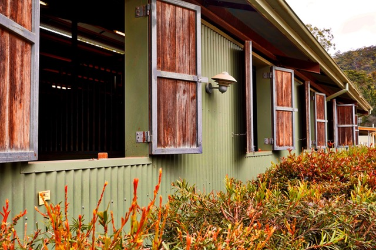

.jpg)

.jpg)


Наш адрес: Московская область, Володарское шоссе д.100
Часы работы с 10-21 ч.
Наша компания - существует более 20 лет на рынке недвижимости, мы рады предложить Вам свои услуги.
Недвижимость — очень важный аспект нашей жизни, и поэтому вопросы, касающиеся недвижимости, волнуют практически каждого человека. Любой нормальный человек хочет, чтобы у него была своя недвижимость, своя квартира или дом. Издревле жилище человека было для него неким убежищем от опасностей и местом для отдыха. Отсюда и фраза «Мой дом — моя крепость». Это понятие накрепко засело в нашем сознании, поэтому даже сейчас, в современном цивилизованном мире, мы начинаем чувствовать себя неуверенно, незащищенным, если у нас нет своей недвижимости.

Своя квартира — для кого-то объект мечтаний («Вот если бы у меня была такая квартира...»), а для кого-то цель («Как только цены на недвижимость снизятся, куплю себе квартиру»). Жизнь идет дальше, и даже когда покупка квартиры — факт состоявшийся, многие на этом не останавливаются. Кому-то одной квартиры становится мало, кто-то переезжает в другой район или город, кто-то с ростом семьи решает увеличить жилплощадь, а кто-то наоборот — разъезжается, а для кого-то недвижимость становится бизнесом (покупка квартиры с целью инвестирования денег и получения впоследствии прибыли). 
Вопросов, связанных с недвижимостью, может быть бесконечное множество. Здесь нужно понимать, что покупка квартиры, продажа квартиры – вопрос очень важный, занимающий довольно много времени и требующий серьезного подхода. Ведь важен не сам факт покупки квартиры или продажи квартиры, важно то — какой будет результат.
Покупатель хочет не просто купить, а выгодно купить квартиру и при этом знать что это надежная покупка или сделка. Продавец, в свою очередь, тоже не ставит своей целью сам факт продажи недвижимости. Он стремится, чтобы продажа квартиры прошла быстро, выгодно и безопасно. Для этого и существует агентство недвижимости - профессионал в вопросах недвижимости, будь то покупка квартиры, или продажа квартиры, или любой другой недвижимости.
Предложения покупки и аренды можно найти в различных средствах массовой информации, их очень много в газетах, в онлайн-ресурсах, да и просто – обратиться к знакомым. Но здесь вы можете столкнуться с другими нюансами, которые могут возникнуть впоследствии, и решить их будет уже намного сложнее. Наша компания предлагает минимилизировать риски, с которыми вы можете столкнуться, проконсультировать и полностью предоставить информацию по разным объектам, чтобы была у вас возможность сделать собственный правильный выбор, выбрать только то, в чем вы будете уверены. Кроме этого, полное сопровождение, вплоть до заключения сделки нашими специалистами снимет с вас ряд головных забот, кроме одной – радости от приобретенного понравившегося варианта. Относиться все это не только к покупке, но и аренде, съеме или же продаже – мы защищаем интересы каждого клиента, помогаем найти компромисс друг с другом в одном объединяющем общем интересе. Вот и здесь, на нашем сайте вы в любое время можете выбрать объект и связаться с менеджером для продуктивного диалога и хорошего конечного результата.